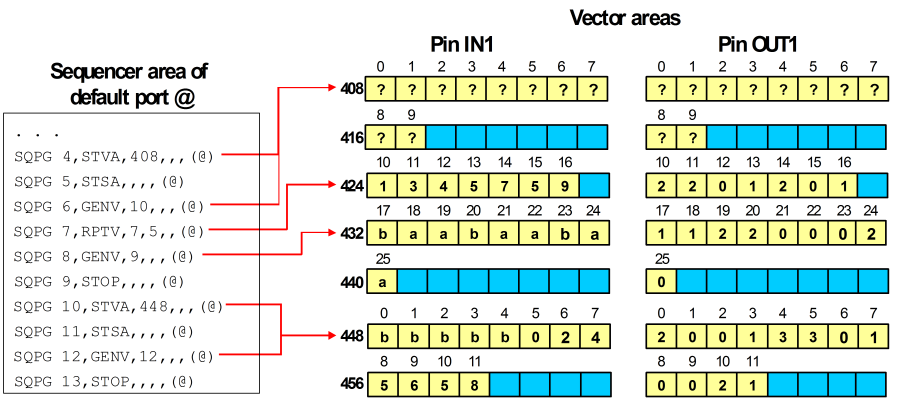

Inserting a sequencer instruction
The general procedure for inserting instructions into a sequencer program is straightforward. It uses the edit command INSI to insert a command line into the sequencer area and the SQPG command to overwite this dummy line with the appropriate instruction.
However, if you want to insert a vector generating instruction (GENV or RPTV), this procedure will raise problems when GENV or RPTV instructions are already present in the program after the new instruction. These vector generating instructions will usually point to incorrect waveform DC/DC power units after the insertion, since INSI and SQPG do not modify the parallel vector areas at all.
Suppose, for example, that you insert a GENV instruction of length 10 with INSI and SQPG into the first label of the standard example (see the figure in Addressing the vector areas) before command line 6. This will have the effect that the new instruction is associated with the two memory words starting at 408 and 416. The following RPTV instruction will now be associated with the vector block at 424, and the last GENV instruction will refer to the blocks at 432 and 440. Thus, the old instructions will now both refer to incorrect waveform DC/DC power units, and the last GENV instruction will illegitimately cross the boundary to the next label.
To avoid these complications, use the edit command INGV to insert a GENV instruction. INGV makes room for the new instruction in the vector areas and preserves the integrity of the existing sequencer constructs.
Procedures
Procedure (general case)
- Activate the label for editing with the TSTL command.
- Use the edit command INSI to expand the sequencer area by one or more lines containing the dummy instruction NOP.
- Overwrite the dummy instructions using the SQPG command.
Example (general case)
For example, you can insert a CTIM instruction (see Changing the Timing Set) between command lines 6 and 7 in the figure in Addressing the vector areas as follows:
TSTL "test_1",- INSI 7,1
- SQPG 7,CTIM,2,,,(@)
Procedure (vector generating instructions)
- Activate the label for editing with the TSTL command.
- Use the INGV command to generate a GENV instruction and to make room for it in the vector areas.
- (Optional) If you want to create an RPTV instruction, overwrite the original GENV instruction generated by INGV with SQPG.
Example (vector generating instructions)
The insertion of a GENV instruction and of an RPTV instruction are slightly different.
Inserting a GENV instruction
For the littles scenario described above, issue:
- TSTL "test_1",
- INGV 6,10
The result will be:

Note the following points in the figure:
- The vector areas are expanded by 2 memory words, which are needed for the new instruction. Accordingly, the start address for the next label in command line 10 (previously 9) is readjusted from 432 to 448.
- The active vectors of the new instruction are represented by question marks to indicate that INGV only provides the space for the new sequencer construct. The appropriate waveform DC/DC power units must be downloaded in a second step.
Inserting an RPTV instruction
When you want to insert an RPTV instruction, use INGV with the required length to preserve the existing sequencer constructs, and subsequently overwrite the new GENV instruction with the RPTV instruction.
Thus, if you want to insert an RPTV instruction of length 10 with 15 repetitions before command line 6 in the figure in Addressing the vector areas, issue the following commands:
- TSTL "test_1",
- INGV 6,10
- SQPG 6,RPTV,10,15,,(@)
Functional changes
- Introduced before SmarTest 6.3.2